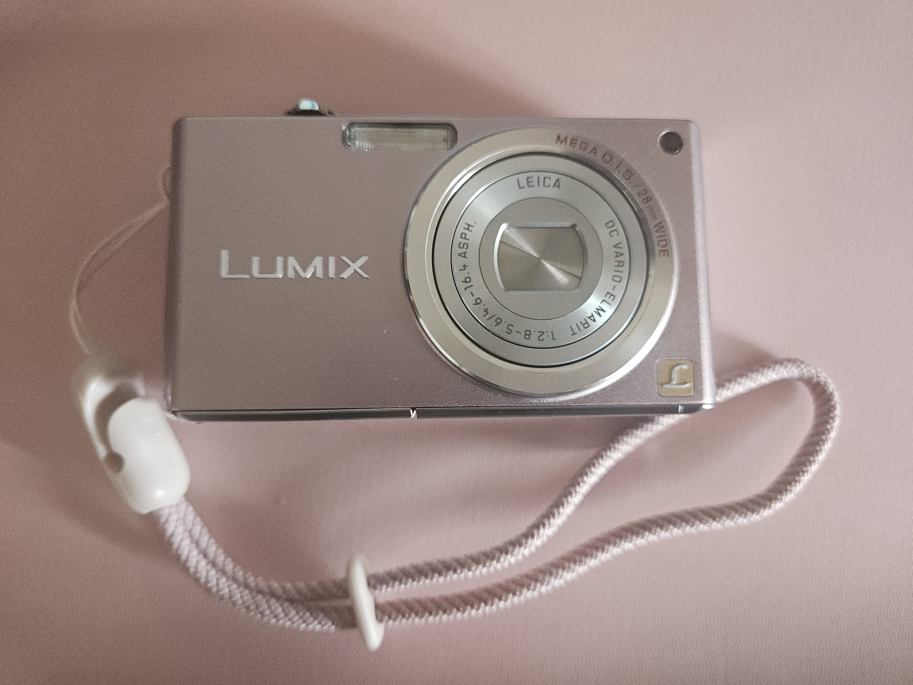
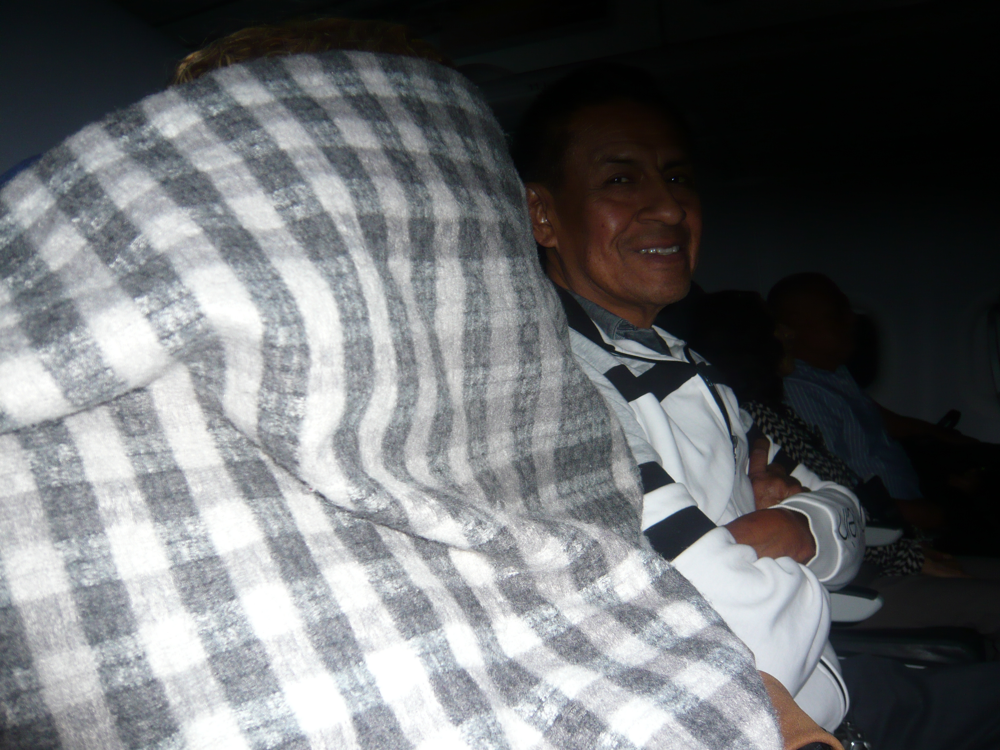
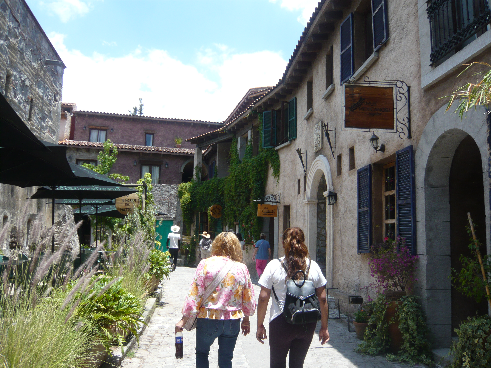
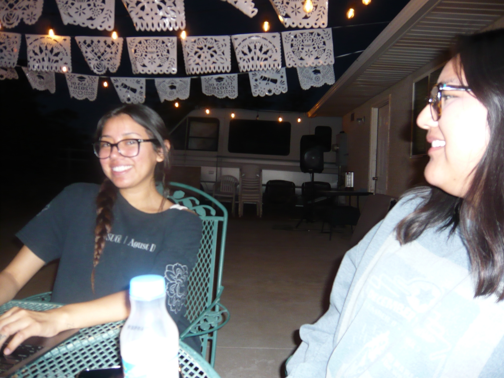

c: \journal\entries.txt
THE JOURNAL
Digicam in daily life
I finally bought my dream digicam. I am not ashamed to say it's the camera Bella got in the New Moon movie. I'm not the biggest fan of taking pictures ever since I was 12 and I got a instagram. But I remember my mom had this canon powershot when I was younger and I loved taking pictures on that. My parents loved documenting our lives through cameras and camcorders. So I always had pictures to look back to really flourish my memories. There is also something so freeing and comforting of look at a little metal camera that a phone can not replicate. I wanna live in the moment but still want to be able to look back on the memories, here is the happy median. Here are some of the pictures that I have taken on my camera recently and a picture of the camera.




Owning or being owned
Are we lying to ourselves? We have so much at our finger tips but are we really using it correctly? There are times that I really just let the internet and my phone control how I spend my time, not the other way around. I feel the time on this earth is truly limited. I want to use the power of modern day and the privliage of technology to my advantage. I want to use it to grow hobbies, increase time outside, and forming genuine human connection again. I've been distracting myself with shopping site and social media. When there are better ways of using my time. I don't want to make it to the end of my life and feel like I spent years alone just staring at my phone and not getting anything meaningful for it.